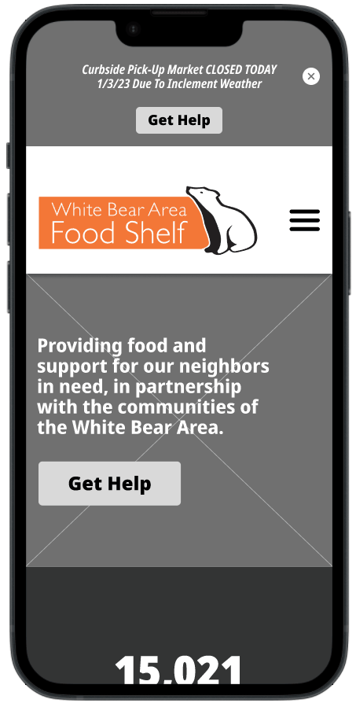
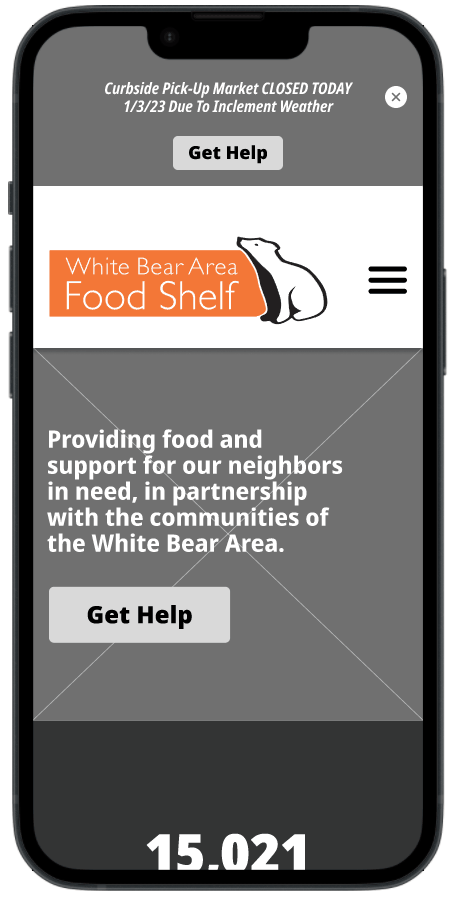

Project Summary
As part of our UX/UI design boot camp, our team was tasked with redesigning a non-profit organization's website. We were given 3 weeks to complete this design challenge.
Our team selected the White Bear Area Food Shelf website to redesign, and our goal was to improve its usability and informational hierarchy to better serve the mission of eliminating food insecurity in the White Bear area.
After creating a responsive website redesign for the White Bear Area Food shelf, we presented our design process to our boot camp cohort and supported our findings and final prototypes with the following deliverables: proto-persona, UX research interview plan, Google Survey findings, brainstorming and feature prioritization matrix, user scenario, journey map, heuristic evaluation, user flow, low fidelity wireframes and prototypes, usability testing plan and findings, style guide, medium-fidelity wireframes and prototypes, style guide, and high-fidelity prototypes.
Project Duration
3 weeks| Dec. 2022 - Jan. 2023
Team
UX/UI Designers| Ross Enger, Alex Perfetti, & Matt Thorstad
My Role
User research, definition, ideation, information architecture, visual design, prototyping, interaction, & testing
Tools
Figma, Miro, https:/colourcontrast.cc/, Adobe CC, & Google Suite
The Problem
Vulnerable people experiencing food insecurity suffer most from inaccessibility of vital information that will connect them to their next meal. The current website lacks a clear and accessible path for connecting users with the resources they need.
The Solution
Redesign the website with a focus on arming patrons with the most important information they need to access food shelf resources. The overall goal of improving the UX and UI of the site is to create a direct impact on local communities seeking help with food security.
Design Process
User Research
When tasked with selecting a non-profit organization, our team settled on the White Bear Area Food Shelf quite easily. It is no secret that food insecurity is an enormous problem space and it is a cause that we can all get behind. To make the selection even easier, one of team members knows the food shelf director, allowing opportunities to work with a stakeholder to implement changes to the site in the future. After viewing the current website, it was obvious that there were ample opportunities for improvement and to make a difference in our local community.
After selecting our food shelf, our team set out to discover what challenges currently exist for patrons when accessing resources at the food shelf. We put together a plan for qualitative and quantitative research, however we encountered our first obstacle when interviewing the food shelf director. We asked permission to interview patrons, however he expressed reservations due to privacy concerns so we pivoted and reached out to others who have had experience utilizing resources at other food shelves in the area. Below, you can see some of the questions we asked users.
User Interview Questions
- What are the main methods people use to access the food shelf you worked with?
- What are the main challenges you've noticed with people accessing a food shelf?
- What areas of improvement do you see with helping folks connect with a food shelf?
- What types of information do you think are essential in including on a website for helping people find a food shelf?
- What have you found to be most important for people when accessing a food shelf?
Interview Takeaways & Pain Points
- We learned that all users want to access the most vital information first for accessing food shelf resources
- All users emphasized the need for mobile accessibility as current mobile websites they’ve experienced have been cumbersome to use and make it difficult to access the information they need
- Two-thirds of users expressed that having a language preference on the website is desired and would help with accessibility
- All users touched on challenges with transportation accessibility and a need for delivery service
Survey
In addition to our qualitative research, we conducted quantitative research in the form of a Google Survey that we posted to a public food shelf Facebook page.
From the 19 responses we received, we found that having an easily accessible mobile website is critical as more than half of users surveyed prefer using their phones for accessing a food shelf. This further supports our findings from our user interviews.
Additionally, we knew moving forward that we must make important information such as date/time of food-pick up, location, and pick-up instructions front and center on the website and easy to find.
Lastly, while just under three-quarters of users reported not needing a language preference, over a quarter of users still expressed the need for the website supporting multiple languages.
Definition
User Persona
Based on the qualitative and quantitative data gathered in our user research, we were able to define a persona that represent the target user for the food shelf website. Rosalie is referenced throughout the remainder of the design process to make sure that all design decisions are being backed up by user data and address the pain points experienced by users like her.
User Scenario
With our persona defined, we then created a user scenario for Rosalie to help define touchpoints she may have with the website.
Journey Mapping
Expanding on our user scenario, we detailed a potential journey Rosalie would go through to access the food shelf resources and associated the emotional states she might experience throughout the process.
User Insight
Having gathered our user research data and developed a user persona, our team then distilled what we found to be most insightful:
People suffering from food insecurity rely most on their phones for accessing crucial information about utilizing their local food shelf.
Problem Statement
Additionally, we defined the following problem statement to focus on as we began working on potential solutions for the website redesign:
Vulnerable people experiencing food insecurity suffer most from inaccessibility of vital information that will connect them to their next meal.
Ideation
Brainstorming
With insights taken from our user research and our problem defined, we began brainstorming potential solutions. Starting with an “I Like, I Wish, What If?” exercise based on our user research added to a feature prioritization matrix, we came up with some key features we wanted to implement in our redesign of the website as well as an opportunity for a feature to develop for the future.
Heuristic Evaluation
To help supplement what we wanted to improve about the website, we analyzed its current condition. The main takeaway from our heuristic evaluation is that the most critical information that we identified as important for users like Rosalie is difficult to read on both desktop and mobile. With numerous other superfluous and distracting elements on the page, the key information that patrons need becomes harder to identify and can be included on other pages of the site.
From a visual standpoint, the site lacks hierarchy and consistency in alignment. Additionally, the color scheme used is visually jarring and distracts users from the most important aspect of the website: connecting users in need with their next meal.
User Flow
In transitioning to user flow, we wanted to focus on simplifying things as much as possible so that users like Rosalie can access vital information that will connect this with food shelf resources as easily as possible. To do so, we included a status banner in the user flow that allows users to view the most immediate information such as current pickup and delivery times as well as any other urgent messages at the top of the page. We also wanted to provide users numerous opportunities to access the rest of the information about food shelf resources by strategically placing “Get Help” buttons throughout the homepage.
Prototype
Low-Fidelity Prototypes
Our team agreed that I would spearhead the effort of designing the prototypes for the site. As defined in our user flow, I included a status banner at the top of the page that cycles through urgent information such as current pickup and delivery as well real-time updates such as food shelf closures. “Get Help” buttons were placed in the status banner, in the hero section as well as in the footer. Between the “Get Help” buttons and accessing “Our Services” from the primary navigation menu, users have abundant opportunities to gather additional information that they’ll need to access food shelf resources.
Once on the “Our Services” page, my focus for designing the page was to structure the content as clearly as possible to avoid any confusion that may prevent patrons from accessing the food shelf easily and quickly.
 

Testing
Low-Fidelity Prototype Usability Testing Plan
We then put our low-fidelity prototypes through our first round of usability testing. We asked users to locate various pieces of important information that would empower users like Rosalie to get the help they need:
- When is the next time you can pick up food from the food shelf?
- Can you locate and list off the specialty food items that are available on today's menu?
- How easy is it for you to locate the food shelf?
- Where would you expect to find up-to-date weather-related messages on the site?
- Can you locate the option to change languages on the site?
- Are the curbside pickup and delivery instructions clear?
- Do you find the appearance of the site to be helpful in accessing the food shelf resources?
- What did you like/dislike while using this website?
Low-Fidelity Prototype Usability Testing Results
First and foremost, all users found the vital information immediately. Finding this information is the most important aspect of the redesign and these results validated that we were solving the problem we identified.
Further, we were pleased to find that all users tested described a clean and intuitive user interface. Some helpful suggestions surfaced through the testing such as having the ability to swipe through the curbside pickup instructions to make viewing easier as well as adding dropdown menus for the language and contact links. Lastly, two-thirds of users tested commented on the need for simplifying the curbside pickup instructions and updating the daily menu.
Prototype
Style Guide
Having validated that we are solving the main problem we identified, I moved on to stylizing the site. I wanted the overall look and feel to feel equally functional and approachable. This is demonstrated with the use of a clear and easy to read typeface along with a simple color scheme that echoes colors from the non-profit logo. Additionally, simple icons are used to reinforce the descriptions and make the content more accessible. Lastly, the imagery used is intended to strengthen the brand and portray the food shelf as an inviting and personable experience.
Medium Fidelity Prototypes
I then applied styling defined in our guide to medium-fidelity prototypes. The overall goal here was to make sure that A) the information is easy to access and digest and B) is inviting and approachable. We then put these prototypes through a second round of usability testing, however no glaring problems or insights were found allowing us to move forward with high-fidelity prototypes.


Before Redesign
Below, you can see the original site on desktop and mobile and all of the aspects covered in the heuristic evaluation.


After Redesign - High-Fidelity Prototypes
Below, you can see our redesign of the website. My goal with these prototypes was to polish off the site with interactions aimed at adding some personality and promote interest to further our goal of making it as inviting as possible.


Conclusion
Reflecting on this project, I’m left with some key takeaways. For one, there is something to be said for how easy it was for our team to select this non-profit organization. Beyond the fact that we had a personal connection to it, the non-profit serves a cause that we can all get behind, and this not only made for an easy selection, but it also made redesigning the site more fulfilling knowing that improving the UX/UI of the website could have a direct impact on our local community.
As for the outcome, it was rewarding knowing that the problem that we defined for users like Rosalie was in fact being solved through our solution. Validating this through user testing proved that we were able to implement meaningful changes to the website.
Future Opportunities
Going forward, if given the chance to turn this minimally viable product into fully developed and functional website, there are several opportunities. Working with the food shelf director, we could make improvements on and simplify the language used in the curbside pickup instructions as well as update the daily menu, as was mentioned in usability testing.
Secondly, during our feature prioritization brainstorming, our team identified a future opportunity to implement real-time updates of food availability. This came up in our initial user interviews and would add value for patrons accessing the food shelf.
Lastly, in this case study, our team targeted the user flow for patrons in need of food shelf resources. In the future, we could redesign the remaining pages of the site and focus on the user experience for volunteers as well as people donating to the food shelf.